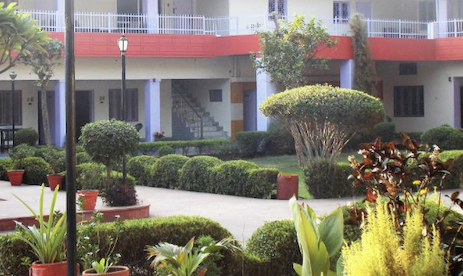

|

|
Book your stay
|
Fatehpur Sikri, situata vicino ad Agra, in India, è una città storica
costruita dall'imperatore Mughal Akbar nel XVI secolo. Servì brevemente
come capitale dell'impero Mughal. La città è famosa per la sua straordinaria architettura,
che combina elementi indiani, persiani e islamici. Tra i suoi principali monumenti ci sono la Jama
Masjid, il Buland Darwaza e il palazzo di Akbar. Patrimonio dell'Umanità UNESCO, Fatehpur Sikri
è un'affascinante testimonianza della grandezza Mughal.
|